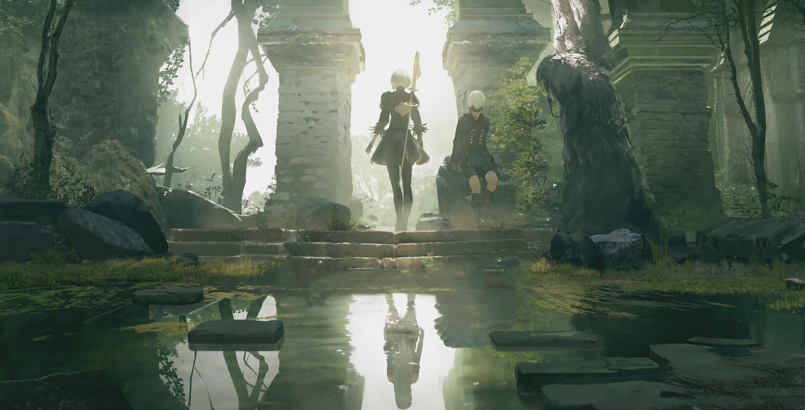

I'm a huge tech lover who has far too many hobbies to count. Learning new things and taking on new challenges despite my capabilities has always been a strong suite of mine. I believe life is all about taking steps outside your comfort zone and taking a big leap of faith in trusting the process. The kind of hobbies I'm into are:
I'm a huge fan of the Nier Automata game created by Yoko Taro, a Japanese Game Developer famous for his enigmatic approach to game development. I'm also a huge fan of the soundtrack that plays throughout this masterpiece of a game.
